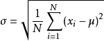

<!DOCTYPE html>
<html lang="zh-CN">
<head>
  <meta charset="UTF-8">
<meta name="viewport" content="width=device-width, initial-scale=1, maximum-scale=2">
<meta name="theme-color" content="#222">
<meta name="generator" content="Hexo 4.2.1">
  <link rel="apple-touch-icon" sizes="180x180" href="/images/apple-touch-icon-next.png">
  <link rel="icon" type="image/png" sizes="32x32" href="/images/favicon-32x32-next.png">
  <link rel="icon" type="image/png" sizes="16x16" href="/images/favicon-16x16-next.png">
  <link rel="mask-icon" href="/images/logo.svg" color="#222">

<link rel="stylesheet" href="/css/main.css">


<link rel="stylesheet" href="/lib/font-awesome/css/font-awesome.min.css">

<script id="hexo-configurations">
    var NexT = window.NexT || {};
    var CONFIG = {"hostname":"geosmart.github.io","root":"/","scheme":"Pisces","version":"7.7.1","exturl":false,"sidebar":{"position":"left","display":"post","padding":18,"offset":12,"onmobile":false},"copycode":{"enable":false,"show_result":false,"style":null},"back2top":{"enable":true,"sidebar":false,"scrollpercent":false},"bookmark":{"enable":false,"color":"#222","save":"auto"},"fancybox":false,"mediumzoom":false,"lazyload":false,"pangu":false,"comments":{"style":"tabs","active":null,"storage":true,"lazyload":false,"nav":null},"algolia":{"hits":{"per_page":10},"labels":{"input_placeholder":"Search for Posts","hits_empty":"We didn't find any results for the search: ${query}","hits_stats":"${hits} results found in ${time} ms"}},"localsearch":{"enable":true,"trigger":"auto","top_n_per_article":1,"unescape":false,"preload":false},"motion":{"enable":true,"async":false,"transition":{"post_block":"fadeIn","post_header":"slideDownIn","post_body":"slideDownIn","coll_header":"slideLeftIn","sidebar":"slideUpIn"}},"path":"search.xml"};
  </script>

  <meta name="description" content="记录机器学习数学概念&#x2F;公式">
<meta property="og:type" content="article">
<meta property="og:title" content="机器学习数学基础">
<meta property="og:url" content="http://geosmart.github.io/2017/10/02/%E6%9C%BA%E5%99%A8%E5%AD%A6%E4%B9%A0%E6%95%B0%E5%AD%A6%E5%9F%BA%E7%A1%80/index.html">
<meta property="og:site_name" content="geosmart.io">
<meta property="og:description" content="记录机器学习数学概念&#x2F;公式">
<meta property="og:locale" content="zh_CN">
<meta property="og:image" content="http://geosmart.github.io/2017/10/02/%E6%9C%BA%E5%99%A8%E5%AD%A6%E4%B9%A0%E6%95%B0%E5%AD%A6%E5%9F%BA%E7%A1%80/%E6%A0%87%E5%87%86%E5%B7%AE%E5%85%AC%E5%BC%8F.png">
<meta property="article:published_time" content="2017-10-02T16:00:00.000Z">
<meta property="article:modified_time" content="2021-12-15T01:13:12.894Z">
<meta property="article:author" content="geosmart">
<meta property="article:tag" content="AI">
<meta name="twitter:card" content="summary">
<meta name="twitter:image" content="http://geosmart.github.io/2017/10/02/%E6%9C%BA%E5%99%A8%E5%AD%A6%E4%B9%A0%E6%95%B0%E5%AD%A6%E5%9F%BA%E7%A1%80/%E6%A0%87%E5%87%86%E5%B7%AE%E5%85%AC%E5%BC%8F.png">

<link rel="canonical" href="http://geosmart.github.io/2017/10/02/%E6%9C%BA%E5%99%A8%E5%AD%A6%E4%B9%A0%E6%95%B0%E5%AD%A6%E5%9F%BA%E7%A1%80/">


<script id="page-configurations">
  // https://hexo.io/docs/variables.html
  CONFIG.page = {
    sidebar: "",
    isHome: false,
    isPost: true
  };
</script>

  <title>机器学习数学基础 | geosmart.io</title>
  


  <noscript>
  <style>
  .use-motion .brand,
  .use-motion .menu-item,
  .sidebar-inner,
  .use-motion .post-block,
  .use-motion .pagination,
  .use-motion .comments,
  .use-motion .post-header,
  .use-motion .post-body,
  .use-motion .collection-header { opacity: initial; }

  .use-motion .site-title,
  .use-motion .site-subtitle {
    opacity: initial;
    top: initial;
  }

  .use-motion .logo-line-before i { left: initial; }
  .use-motion .logo-line-after i { right: initial; }
  </style>
</noscript>

</head>

<body itemscope itemtype="http://schema.org/WebPage">
  <div class="container use-motion">
    <div class="headband"></div>

    <header class="header" itemscope itemtype="http://schema.org/WPHeader">
      <div class="header-inner"><div class="site-brand-container">
  <div class="site-nav-toggle">
    <div class="toggle" aria-label="切换导航栏">
      <span class="toggle-line toggle-line-first"></span>
      <span class="toggle-line toggle-line-middle"></span>
      <span class="toggle-line toggle-line-last"></span>
    </div>
  </div>

  <div class="site-meta">

    <div>
      <a href="/" class="brand" rel="start">
        <span class="logo-line-before"><i></i></span>
        <span class="site-title">geosmart.io</span>
        <span class="logo-line-after"><i></i></span>
      </a>
    </div>
        <p class="site-subtitle">勿助勿忘，深造自得</p>
  </div>

  <div class="site-nav-right">
    <div class="toggle popup-trigger">
        <i class="fa fa-search fa-fw fa-lg"></i>
    </div>
  </div>
</div>


<nav class="site-nav">
  
  <ul id="menu" class="menu">
        <li class="menu-item menu-item-home">

    <a href="/" rel="section"><i class="fa fa-fw fa-home"></i>首页</a>

  </li>
        <li class="menu-item menu-item-about">

    <a href="/about/" rel="section"><i class="fa fa-fw fa-user"></i>关于</a>

  </li>
        <li class="menu-item menu-item-tags">

    <a href="/tags/" rel="section"><i class="fa fa-fw fa-tags"></i>标签</a>

  </li>
        <li class="menu-item menu-item-categories">

    <a href="/categories/" rel="section"><i class="fa fa-fw fa-th"></i>分类</a>

  </li>
        <li class="menu-item menu-item-archives">

    <a href="/archives/" rel="section"><i class="fa fa-fw fa-archive"></i>归档</a>

  </li>
      <li class="menu-item menu-item-search">
        <a role="button" class="popup-trigger"><i class="fa fa-search fa-fw"></i>搜索
        </a>
      </li>
  </ul>

</nav>
  <div class="site-search">
    <div class="popup search-popup">
    <div class="search-header">
  <span class="search-icon">
    <i class="fa fa-search"></i>
  </span>
  <div class="search-input-container">
    <input autocomplete="off" autocorrect="off" autocapitalize="off"
           placeholder="搜索..." spellcheck="false"
           type="search" class="search-input">
  </div>
  <span class="popup-btn-close">
    <i class="fa fa-times-circle"></i>
  </span>
</div>
<div id="search-result"></div>

</div>
<div class="search-pop-overlay"></div>

  </div>
</div>
    </header>

    
  <div class="back-to-top">
    <i class="fa fa-arrow-up"></i>
    <span>0%</span>
  </div>

  <a href="https://github.com/geosmart" class="github-corner" title="Follow me on GitHub" aria-label="Follow me on GitHub" rel="noopener" target="_blank"><svg width="80" height="80" viewBox="0 0 250 250" aria-hidden="true"><path d="M0,0 L115,115 L130,115 L142,142 L250,250 L250,0 Z"></path><path d="M128.3,109.0 C113.8,99.7 119.0,89.6 119.0,89.6 C122.0,82.7 120.5,78.6 120.5,78.6 C119.2,72.0 123.4,76.3 123.4,76.3 C127.3,80.9 125.5,87.3 125.5,87.3 C122.9,97.6 130.6,101.9 134.4,103.2" fill="currentColor" style="transform-origin: 130px 106px;" class="octo-arm"></path><path d="M115.0,115.0 C114.9,115.1 118.7,116.5 119.8,115.4 L133.7,101.6 C136.9,99.2 139.9,98.4 142.2,98.6 C133.8,88.0 127.5,74.4 143.8,58.0 C148.5,53.4 154.0,51.2 159.7,51.0 C160.3,49.4 163.2,43.6 171.4,40.1 C171.4,40.1 176.1,42.5 178.8,56.2 C183.1,58.6 187.2,61.8 190.9,65.4 C194.5,69.0 197.7,73.2 200.1,77.6 C213.8,80.2 216.3,84.9 216.3,84.9 C212.7,93.1 206.9,96.0 205.4,96.6 C205.1,102.4 203.0,107.8 198.3,112.5 C181.9,128.9 168.3,122.5 157.7,114.1 C157.9,116.9 156.7,120.9 152.7,124.9 L141.0,136.5 C139.8,137.7 141.6,141.9 141.8,141.8 Z" fill="currentColor" class="octo-body"></path></svg></a>


    <main class="main">
      <div class="main-inner">
        <div class="content-wrap">
          

          <div class="content">
            

  <div class="posts-expand">
      
  
  
  <article itemscope itemtype="http://schema.org/Article" class="post-block " lang="zh-CN">
    <link itemprop="mainEntityOfPage" href="http://geosmart.github.io/2017/10/02/%E6%9C%BA%E5%99%A8%E5%AD%A6%E4%B9%A0%E6%95%B0%E5%AD%A6%E5%9F%BA%E7%A1%80/">

    <span hidden itemprop="author" itemscope itemtype="http://schema.org/Person">
      <meta itemprop="image" content="/images/avatar.gif">
      <meta itemprop="name" content="geosmart">
      <meta itemprop="description" content="">
    </span>

    <span hidden itemprop="publisher" itemscope itemtype="http://schema.org/Organization">
      <meta itemprop="name" content="geosmart.io">
    </span>
      <header class="post-header">
        <h1 class="post-title" itemprop="name headline">
          机器学习数学基础
        </h1>

        <div class="post-meta">
            <span class="post-meta-item">
              <span class="post-meta-item-icon">
                <i class="fa fa-calendar-o"></i>
              </span>
              <span class="post-meta-item-text">发表于</span>

              <time title="创建时间：3   十月   2017 0:00:00" itemprop="dateCreated datePublished" datetime="2017-10-03T00:00:00+08:00">3   十月   2017</time>
            </span>
              <span class="post-meta-item">
                <span class="post-meta-item-icon">
                  <i class="fa fa-calendar-check-o"></i>
                </span>
                <span class="post-meta-item-text">更新于</span>
                <time title="修改时间：15   十二月   2021 9:13:12" itemprop="dateModified" datetime="2021-12-15T09:13:12+08:00">15   十二月   2021</time>
              </span>
            <span class="post-meta-item">
              <span class="post-meta-item-icon">
                <i class="fa fa-folder-o"></i>
              </span>
              <span class="post-meta-item-text">分类于</span>
                <span itemprop="about" itemscope itemtype="http://schema.org/Thing">
                  <a href="/categories/%E6%9C%BA%E5%99%A8%E5%AD%A6%E4%B9%A0/" itemprop="url" rel="index"><span itemprop="name">机器学习</span></a>
                </span>
            </span>

          

        </div>
      </header>

    
    
    
    <div class="post-body" itemprop="articleBody">

      
        <p>记录机器学习数学概念/公式</p>
<hr>
<a id="more"></a> 
<h2 id="机器学习数学基础"><a href="#机器学习数学基础" class="headerlink" title="机器学习数学基础"></a>机器学习数学基础</h2><h1 id="线性代数"><a href="#线性代数" class="headerlink" title="线性代数"></a>线性代数</h1><h2 id="Variance-方差"><a href="#Variance-方差" class="headerlink" title="Variance(方差)"></a>Variance(方差)</h2><blockquote>
<p>方差（Variance），应用数学里的专有名词。<br>在概率论和统计学中，一个随机变量的方差描述的是它的离散程度，也就是该变量离其期望值的距离。方差越大，数据的分布越分散。<br>一个实随机变量的方差也称为它的二阶矩或二阶中心动差，恰巧也是它的二阶累积量。<br>说白了，就是将各个误差将之平方（而非取绝对值），使之肯定为正数，相加之后再除以总数，透过这样的方式来算出各个数据分布、零散（相对中心点）的程度。<br>继续延伸的话，方差的算术平方根称为该随机变量的标准差（此为相对各个数据点间）。</p>
</blockquote>
<p>总体方差计算公式：  </p>
<h2 id="Bias-偏差"><a href="#Bias-偏差" class="headerlink" title="Bias(偏差)"></a>Bias(偏差)</h2><p>偏差：描述的是预测值（估计值）的期望与真实值之间的差距。偏差越大，越偏离真实数据，<br>方差，是形容数据分散程度的，算是“无监督的”，客观的指标，<br>偏差，形容数据跟我们期望的中心差得有多远，算是“有监督的”，有人的知识参与的指标。</p>
<h2 id="Standard-Deviation-标准差"><a href="#Standard-Deviation-标准差" class="headerlink" title="Standard Deviation(标准差)"></a>Standard Deviation(标准差)</h2><blockquote>
<p>标准差（Standard Deviation，SD）又常称均方差，数学符号 σ（sigma），在概率统计中最常使用作为测量一组数值的离散程度之用。<br>标准差定义：标准差是方差的算术平方根。标准差能反映一个数据集的离散程度。平均数相同的两组数据，标准差未必相同。  </p>
</blockquote>
<p>标准差也被称为标准偏差，或者实验标准差，公式为<br></p>
<h2 id="正态分布"><a href="#正态分布" class="headerlink" title="正态分布"></a>正态分布</h2><h2 id="矩阵"><a href="#矩阵" class="headerlink" title="矩阵"></a>矩阵</h2><h3 id="矩阵的性质"><a href="#矩阵的性质" class="headerlink" title="矩阵的性质"></a>矩阵的性质</h3><ul>
<li>不满足交换律</li>
<li>方阵：行列相等</li>
<li>单位矩阵：xx对角线都为1</li>
<li>逆矩阵：I<em>A=A</em>I=A</li>
<li>奇异矩阵/退化矩阵（singular/degenerate）：没有逆矩阵，如零矩阵（矩阵元素都为0）<h3 id="矩阵的乘法"><a href="#矩阵的乘法" class="headerlink" title="矩阵的乘法"></a>矩阵的乘法</h3><h3 id="矩阵的转置（transpose）"><a href="#矩阵的转置（transpose）" class="headerlink" title="矩阵的转置（transpose）"></a>矩阵的转置（transpose）</h3></li>
</ul>
<h1 id="微积分"><a href="#微积分" class="headerlink" title="微积分"></a>微积分</h1><h2 id="导数"><a href="#导数" class="headerlink" title="导数"></a>导数</h2><h2 id="偏导数"><a href="#偏导数" class="headerlink" title="偏导数"></a>偏导数</h2><h2 id="梯度"><a href="#梯度" class="headerlink" title="梯度"></a>梯度</h2><h2 id="微分"><a href="#微分" class="headerlink" title="微分"></a>微分</h2><h1 id="常用公式"><a href="#常用公式" class="headerlink" title="常用公式"></a>常用公式</h1><ul>
<li><p>假定函數（Hypothesis）：<script type="math/tex">h_    heta(x)=    heta_0+    heta_1x</script><br>参数：$    heta_0{,}    heta_1$</p>
</li>
<li><p>损失函数（Cost Function）：<script type="math/tex">J(    heta_0,    heta_1) = rac{1}{2m} \sum_{i=1}^m (h_    heta(x^{(i)})-y^{(i)})^2</script><br>目标：$ argmin $ $ J(    heta_0,    heta_1) $ </p>
</li>
<li><p>多元梯度下降算法</p>
<ul>
<li>假设函数：<script type="math/tex">h_    heta(x)=    heta^Tx=     heta_0x_0+    heta_1x_1+    heta_2x_2 +...+    heta_0x_n</script></li>
<li>参数：<script type="math/tex">heta_0{,}    heta_1,...,    heta_n</script></li>
<li>代价函数：<script type="math/tex">J_(    heta)=J(    heta_0,    heta_1,...,    heta_n)=rac{1}{2m} \sum_{i=1}^m (h_    heta(x^{(i)})-y^{(i)})^2</script>，<br>一元时，$x_j^{(i)}=x_0^{(1)}=1$</li>
<li>梯度下降：Repeat { <script type="math/tex">heta_j :=    heta_j - lpha rac{\partial}{\partial    heta_j}J(    heta) =
lpha  rac{1}{m} \sum_{i=1}^m (h_    heta(x^{(i)})-y^{(i)})⋅x_j^{(i)}</script> } ，同步更新每个$j=0,…m$<br>$lpha$为学习率，定义了每次参数更新的幅度；</li>
</ul>
</li>
</ul>
<blockquote>
<p>Learning Rate:<br>If α is too small: slow convergence.<br>If α is too large: may not decrease on every iteration and thus may not converge.</p>
</blockquote>

    </div>

    
    
    

      <footer class="post-footer">
          <div class="post-tags">
              <a href="/tags/AI/" rel="tag"># AI</a>
          </div>

        


        
    <div class="post-nav">
      <div class="post-nav-item">
    <a href="/2017/10/02/Nodejs%E5%85%A5%E9%97%A8%E7%AC%94%E8%AE%B0/" rel="prev" title="Nodejs入门笔记">
      <i class="fa fa-chevron-left"></i> Nodejs入门笔记
    </a></div>
      <div class="post-nav-item">
    <a href="/2017/10/02/%E6%9C%BA%E5%99%A8%E5%AD%A6%E4%B9%A0%E6%96%B9%E6%B3%95%E8%AE%BA/" rel="next" title="机器学习方法论">
      机器学习方法论 <i class="fa fa-chevron-right"></i>
    </a></div>
    </div>
      </footer>
    
  </article>
  
  
  

  </div>


          </div>
          
    <div class="comments" id="gitalk-container"></div>

<script>
  window.addEventListener('tabs:register', () => {
    let activeClass = CONFIG.comments.activeClass;
    if (CONFIG.comments.storage) {
      activeClass = localStorage.getItem('comments_active') || activeClass;
    }
    if (activeClass) {
      let activeTab = document.querySelector(`a[href="#comment-${activeClass}"]`);
      if (activeTab) {
        activeTab.click();
      }
    }
  });
  if (CONFIG.comments.storage) {
    window.addEventListener('tabs:click', event => {
      if (!event.target.matches('.tabs-comment .tab-content .tab-pane')) return;
      let commentClass = event.target.classList[1];
      localStorage.setItem('comments_active', commentClass);
    });
  }
</script>

        </div>
          
  
  <div class="toggle sidebar-toggle">
    <span class="toggle-line toggle-line-first"></span>
    <span class="toggle-line toggle-line-middle"></span>
    <span class="toggle-line toggle-line-last"></span>
  </div>

  <aside class="sidebar">
    <div class="sidebar-inner">

      <ul class="sidebar-nav motion-element">
        <li class="sidebar-nav-toc">
          文章目录
        </li>
        <li class="sidebar-nav-overview">
          站点概览
        </li>
      </ul>

      <!--noindex-->
      <div class="post-toc-wrap sidebar-panel">
          <div class="post-toc motion-element"><ol class="nav"><li class="nav-item nav-level-2"><a class="nav-link" href="#机器学习数学基础"><span class="nav-number">1.</span> <span class="nav-text">机器学习数学基础</span></a></li></ol></li><li class="nav-item nav-level-1"><a class="nav-link" href="#线性代数"><span class="nav-number"></span> <span class="nav-text">线性代数</span></a><ol class="nav-child"><li class="nav-item nav-level-2"><a class="nav-link" href="#Variance-方差"><span class="nav-number">1.</span> <span class="nav-text">Variance(方差)</span></a></li><li class="nav-item nav-level-2"><a class="nav-link" href="#Bias-偏差"><span class="nav-number">2.</span> <span class="nav-text">Bias(偏差)</span></a></li><li class="nav-item nav-level-2"><a class="nav-link" href="#Standard-Deviation-标准差"><span class="nav-number">3.</span> <span class="nav-text">Standard Deviation(标准差)</span></a></li><li class="nav-item nav-level-2"><a class="nav-link" href="#正态分布"><span class="nav-number">4.</span> <span class="nav-text">正态分布</span></a></li><li class="nav-item nav-level-2"><a class="nav-link" href="#矩阵"><span class="nav-number">5.</span> <span class="nav-text">矩阵</span></a><ol class="nav-child"><li class="nav-item nav-level-3"><a class="nav-link" href="#矩阵的性质"><span class="nav-number">5.1.</span> <span class="nav-text">矩阵的性质</span></a></li><li class="nav-item nav-level-3"><a class="nav-link" href="#矩阵的乘法"><span class="nav-number">5.2.</span> <span class="nav-text">矩阵的乘法</span></a></li><li class="nav-item nav-level-3"><a class="nav-link" href="#矩阵的转置（transpose）"><span class="nav-number">5.3.</span> <span class="nav-text">矩阵的转置（transpose）</span></a></li></ol></li></ol></li><li class="nav-item nav-level-1"><a class="nav-link" href="#微积分"><span class="nav-number"></span> <span class="nav-text">微积分</span></a><ol class="nav-child"><li class="nav-item nav-level-2"><a class="nav-link" href="#导数"><span class="nav-number">1.</span> <span class="nav-text">导数</span></a></li><li class="nav-item nav-level-2"><a class="nav-link" href="#偏导数"><span class="nav-number">2.</span> <span class="nav-text">偏导数</span></a></li><li class="nav-item nav-level-2"><a class="nav-link" href="#梯度"><span class="nav-number">3.</span> <span class="nav-text">梯度</span></a></li><li class="nav-item nav-level-2"><a class="nav-link" href="#微分"><span class="nav-number">4.</span> <span class="nav-text">微分</span></a></li></ol></li><li class="nav-item nav-level-1"><a class="nav-link" href="#常用公式"><span class="nav-number"></span> <span class="nav-text">常用公式</span></a></div>
      </div>
      <!--/noindex-->

      <div class="site-overview-wrap sidebar-panel">
        <div class="site-author motion-element" itemprop="author" itemscope itemtype="http://schema.org/Person">
  <p class="site-author-name" itemprop="name">geosmart</p>
  <div class="site-description" itemprop="description"></div>
</div>
<div class="site-state-wrap motion-element">
  <nav class="site-state">
      <div class="site-state-item site-state-posts">
          <a href="/archives/">
        
          <span class="site-state-item-count">199</span>
          <span class="site-state-item-name">日志</span>
        </a>
      </div>
      <div class="site-state-item site-state-categories">
            <a href="/categories/">
          
        <span class="site-state-item-count">15</span>
        <span class="site-state-item-name">分类</span></a>
      </div>
      <div class="site-state-item site-state-tags">
            <a href="/tags/">
          
        <span class="site-state-item-count">118</span>
        <span class="site-state-item-name">标签</span></a>
      </div>
  </nav>
</div>
  <div class="links-of-author motion-element">
      <span class="links-of-author-item">
        <a href="https://github.com/geosmart" title="GitHub → https:&#x2F;&#x2F;github.com&#x2F;geosmart" rel="noopener" target="_blank"><i class="fa fa-fw fa-github"></i>GitHub</a>
      </span>
  </div>


      </div>

    </div>
  </aside>
  <div id="sidebar-dimmer"></div>


      </div>
    </main>

    <footer class="footer">
      <div class="footer-inner">
        

<div class="copyright">
  
  &copy; 
  <span itemprop="copyrightYear">2021</span>
  <span class="with-love">
    <i class="fa fa-user"></i>
  </span>
  <span class="author" itemprop="copyrightHolder">geosmart</span>
</div>

        


      </div>
    </footer>
  </div>

  
  <script src="/lib/anime.min.js"></script>
  <script src="/lib/velocity/velocity.min.js"></script>
  <script src="/lib/velocity/velocity.ui.min.js"></script>

<script src="/js/utils.js"></script>

<script src="/js/motion.js"></script>


<script src="/js/schemes/pisces.js"></script>


<script src="/js/next-boot.js"></script>


  


  
<script src="/js/local-search.js"></script>


  

  
      

<script>
  if (typeof MathJax === 'undefined') {
    window.MathJax = {
      tex: {
        inlineMath: {'[+]': [['$', '$']]},
        tags: 'ams'
      },
      options: {
        renderActions: {
          findScript: [10, doc => {
            document.querySelectorAll('script[type^="math/tex"]').forEach(node => {
              const display = !!node.type.match(/; *mode=display/);
              const math = new doc.options.MathItem(node.textContent, doc.inputJax[0], display);
              const text = document.createTextNode('');
              node.parentNode.replaceChild(text, node);
              math.start = {node: text, delim: '', n: 0};
              math.end = {node: text, delim: '', n: 0};
              doc.math.push(math);
            });
          }, '', false],
          insertedScript: [200, () => {
            document.querySelectorAll('mjx-container').forEach(node => {
              let target = node.parentNode;
              if (target.nodeName.toLowerCase() === 'li') {
                target.parentNode.classList.add('has-jax');
              }
            });
          }, '', false]
        }
      }
    };
    (function () {
      var script = document.createElement('script');
      script.src = '//cdn.jsdelivr.net/npm/mathjax@3/es5/tex-mml-chtml.js';
      script.defer = true;
      document.head.appendChild(script);
    })();
  } else {
    MathJax.startup.document.state(0);
    MathJax.texReset();
    MathJax.typeset();
  }
</script>

    

  

<link rel="stylesheet" href="//cdn.jsdelivr.net/npm/gitalk@1/dist/gitalk.min.css">

<script>
NexT.utils.loadComments(document.querySelector('#gitalk-container'), () => {
  NexT.utils.getScript('//cdn.jsdelivr.net/npm/gitalk@1/dist/gitalk.min.js', () => {
    var gitalk = new Gitalk({
      clientID    : '8a29a27c357a64ed79fd',
      clientSecret: 'fe1b781c49fa9037803f3c4d3e94fbb677abac4d',
      repo        : 'geosmart.github.io',
      owner       : 'geosmart',
      admin       : ['geosmart'],
      id          : '764fdb8d570f25df88890f1e895f304b',
        language: 'zh-CN',
      distractionFreeMode: true
    });
    gitalk.render('gitalk-container');
  }, window.Gitalk);
});
</script>

</body>
</html>
